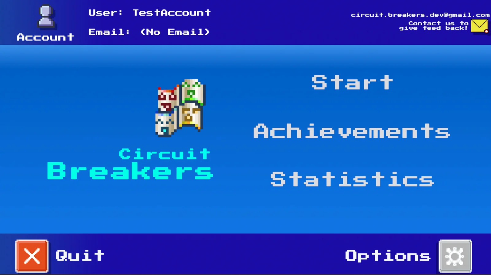

★ Best Thesis · Best Paper · Best Presenter
Circuit Breakers
A 2D roguelike that teaches cybersecurity through play. I served as lead author on the award-winning paper and technical documentation, ran the numerical balancing across gameplay and database systems, and built functionality from UI to core mechanics. Backed by Firebase for auth, stats, and achievements.